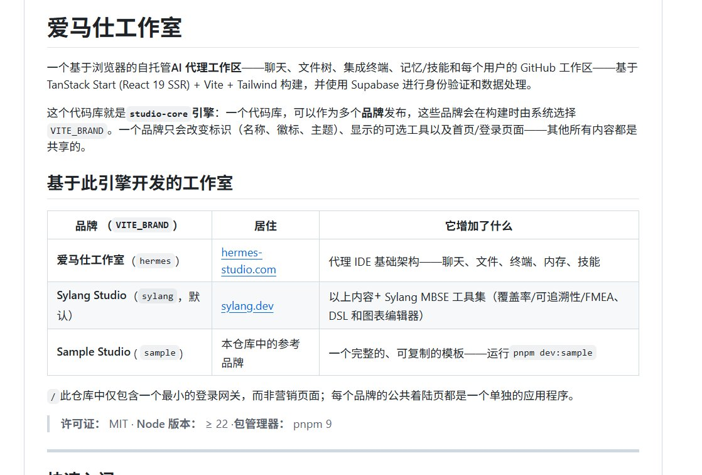

X STATUS · BLUE TECHNICAL MANUAL
把 Hermes 从能跑变成可控：这 5 个仓库补的是五层工作流
这条 X 帖不是在“再推荐 5 个仓库”，而是在把 Hermes 拆成一条可装配的系统：护栏、操作习惯、仓库记忆、工作台、低延迟记忆。真正有用的不是名单，而是分层顺序。
5 个仓库
3 个主层
护栏 / 工作台 / 记忆
Source: @NFTCPS
Source snapshot
https://x.com/i/status/2062475247740387462 · 公开可见时间：2026-06-04 18:03:12 UTC+8 · 页面可见互动：约 200 赞 / 37 转发 / 285 书签 / 15.6k 浏览
作者@NFTCPS
仓库数5 个（按源帖顺序）
主张不是目录页，而是工作流栈
结论先护栏，再工作台，再记忆
这条帖真正值得看的地方，不是“又发现了几个仓库”，而是它把 Hermes 拆成了可实施的 5 层。
如果你把它当工具清单，得到的是收藏夹；如果你把它当系统分层，得到的是一条能落地的 Hermes 工作流：先 stop runaway，再给工作台，再补记忆，最后才是 SOP 与 repo 历史。
runtime safety
operating habits
repo memory
workspace
local memory

配图不是装饰。 这张图对应列表中的 Hermes-Studio：它展示的是浏览器端自托管工作台，而不是单纯的聊天壳。正好说明这条帖的重点是“控制面”而不是“单点能力”。
如果你的 agent 还在“能跑就行”的阶段，这条帖先告诉你：先把失控通道堵住，再谈更聪明的工作流。
运行护栏
它盯的是 tool call 和 LLM turn：一旦循环、超预算、越权或跑偏，就把 agent 拉闸。
- 定位：runtime 侧安全监督，发现失控后输出 death certificate，而不是“提醒一下”。
- 第一步：先把它装进高风险 session，观察 kill 条件与证据记录是否清楚。
- 边界：它是监督器，不是工作台；负责止损，不负责把工作做完。
操作习惯
它把 Hermes 的“怎么做事”写成可安装技能：workspace hygiene、decision discipline、publishing safety、SOP/Playbook。
- 定位：让 agent 学会先选真实目的地、尊重 git、保留决策理由，再谈效率。
- 第一步：先看 tidy workspace / decision / publishing 三条，相当于先给 agent 装默认工作习惯。
- 边界：它管流程与习惯，不管实时安全；更像 operating system 的默认设置。
仓库记忆
它把 commit、PR、issue 和理由写进持久记忆，让你能问“为什么删了 Redis”而不是猜。
- 定位：repository institutional memory，把工程决策和证据链连起来。
- 第一步：先接一个 public repo，再问一次“为什么这件事这么改”。
- 边界：它是历史与审计层，不是交互界面；依赖事件流和记忆存储才成立。
工作台
它是 Hermes 的网页控制台：chat、memory、skills、terminal、approvals、multi-agent orchestration 一起摆在台面上。
- 定位：browser workspace / dashboard，让人可以真正看见和操控 agent。
- 第一步：先把它当成操作台，而不是聊天壳；把一个真实 workspace 跑起来，再接更多能力。
- 边界：它负责让你用起来，不负责替你记住一切；界面层和记忆层要分开。
低延迟记忆
它是 zero-dependency、sub-millisecond 的 memory system，偏 retrieval / consolidation / local-first。
- 定位：把“记得住”做成底层能力，减少 agent 需要反复追问和自我遗忘。
- 第一步：先把它当本地 memory backend 试，不要一上来就拿它去替代 SOP 或权限逻辑。
- 边界：它负责“记得住”，不负责“该不该做”；记忆再强，也不能替代行为约束。
护栏层
先看 hermeskill。它决定这套生态是不是“能停得住”。
- 如果 agent 会跑偏、会烧钱、会越权，这层比任何界面都优先。
工作台层
Hermes-Studio 是人机接触面：你在这里看见 chat、terminal、approvals 和 multi-agent。
- 当你需要“可操作”，先把台面搭起来；不然 memory 也只是空仓库。
记忆层
mnemosyne 与 Shadow CTO 分别解决“今天还记得”和“为什么这么改”。
- 一个偏 retrieval，一个偏 repo history；两者叠在一起才像长期协作系统。
装配逻辑：
1) 先让 agent 不会失控 → hermeskill
2) 再让人能操作、能审批、能看见 workspace → Hermes-Studio
3) 接入低延迟 memory → mnemosyne
4) 再把做事方法写成技能和 SOP → hermes-proficiencies
5) 最后让仓库历史可追问、可解释 → Shadow CTO
1
先装 hermeskill
如果你只做一件事，就先把失控通道堵上。
2
再开 Hermes-Studio
把 Hermes 放到一个能看见、能点、能审批的工作台。
3
接 mnemosyne
让它开始“记得住”，再谈“做得快”。
4
最后补 hermes-proficiencies + Shadow CTO
前者固化 SOP，后者固化仓库历史；一个管习惯，一个管原因。
发布时间：2026-06-05 17:08:12 · 主题：infocard-blue-technical-manual-style · 本页配图已本地化，保存按钮会导出整张 PNG。